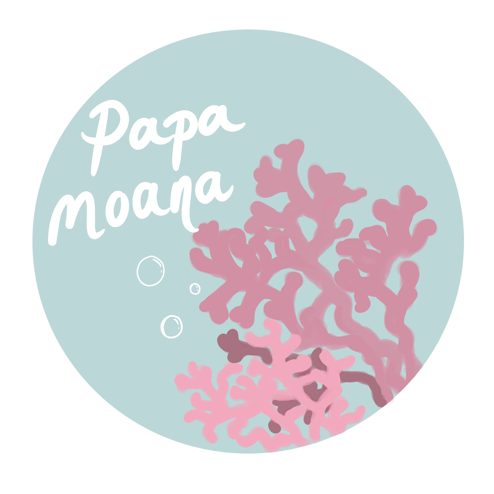

The Environmentally Friendly Alternative
The Great Barrier Reef is not only one of Australia’s greatest tourist attractions, it is also a national treasure. Over half of the reef is now dead, but the continual beaching can be reduced if we are more environmentally friendly. The vast majority of sunscreens contain chemicals such as oxybenzone and octinoxate which are some of the most common UV blockers on the market and for good reason. These chemicals are cheap to produce and effective at sun protection, what more could you ask for? The unfortunate truth about these chemicals is that they are incredibly damaging to marine life, especially the reef. Over 2 million people visit the reef yearly, all of whom are required to wear sunscreen to keep themselves protected. In the water it is necessary that we wear sunscreen, but this leads to over 6,000 tons of sunscreen washing into the reef every year. This doesn’t need to be a tragedy for the reef as long as we use reef-safe ingredients.
Our sunscreen is a mineral based with non-nanotized zinc oxide and titanium dioxide making it a safer and less harmful alternative for our skin while protecting the beautiful reef from nasty chemical toxins.